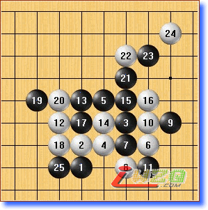
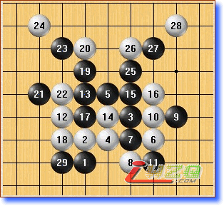
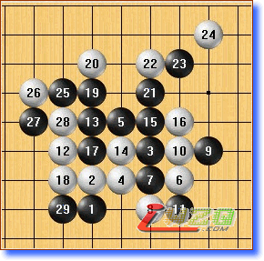
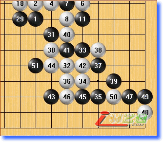
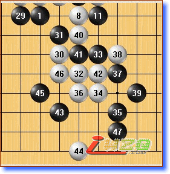
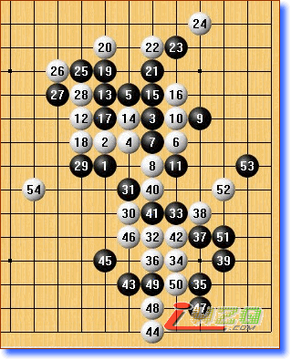

原文地址：http://www.rifchina.com/Article/ShowArticle.asp?ArticleID=4370
李洪斌八段点评：
这盘吴镝非常有希望。黑11有国内棋手说是白12必胜，初步的分析黑棋不太理想，吴镝对此应该有深入的研究，山口的实战是最强防 。
现在吴镝在长考，大家或许会疑问，这个14应该防10i，还用考虑吗？其实，14防12g也是非常有趣的。
殷立成七段点评：
这个局面白好，黑棋很难受的。
李洪斌八段点评：
山口的在15也只能如此，16后黑方能考虑的防点所剩无几，10h必须要占的。

李洪斌八段点评：
白18有点疑问，白棋应该先冲成44似乎比实战好，如果黑棋这样处理，白看不到明显的胜机。虽然可以在下面做棋，但战线太漫长了。

李洪斌八段点评：
走成这样白也不能马上解决战斗，为吴镝着急

李洪斌八段点评：
预计黑棋大致会这样处理 和前面参考图大同小异 。等白棋下一手了，左边还是下边？大家一起来猜猜看。
李洪斌八段点评：
如果是我的话，我会选择在下面拓展，目前来说黑棋要胜几乎没有可能，关键是吴镝的心态不能起变化。如果找不到机会稳拿0.5分也不错。
李洪斌八段点评：
目前吴镝陷入长考,I6、 K6感觉是第30手两个可供选择的点.
李洪斌八段点评：
吴镝第30手的拓展如大家所料 ,白棋下面的局部下得非常强 ,山口的防守也非常精确。现在，对吴镝有利的是,白棋余味很多.
大家可以一起来想想，吴镝是否能创造胜机呢?在局部,我们试了很多点都不理想 .


李洪斌八段点评：
从最新谱来看，这个黑棋有唯一防 如果吴镝下这个46，47又是局部唯一防 。
李洪斌八段点评：
目前就怕白棋误算有胜，如果能清晰判断形势，局部尝试两步，如果山口都防正确，可以考虑转身，那样可以让自己立于不败之地。如果按照前面的预想继续的话，白棋54可以考虑。

殷立成七段点评:
目前白棋形势不错的,应该有机会,就看白棋如何上下呼应,因为白棋在25位上面做棋,或者26 28这条线上做个眠三,黑棋都是很难应对的,关键看怎么联系.这样的局面,白棋很难输了 ,除非吴镝活三不挡.
.
李洪斌八段点评：
和我们前面预测的差不多,似乎是在49出问题了.实战，山口的确如我们预料的下出两步唯一防。并且吴镝也明智的即时转身，48是攻守兼备的要点。 问题似乎出在49（大概双方都已经进入读秒），黑棋在下面的交换中落了后手，被吴镝连续在左边又走了一个58后，黑棋局面难以收拾。 实战60似乎已经是必胜形了 .
开局的正确选择 打下了获胜的基础 同时白棋很好的掌控了全局 没有给黑棋任何的机会 应该说是白棋完胜的一盘 !祝贺吴镝！